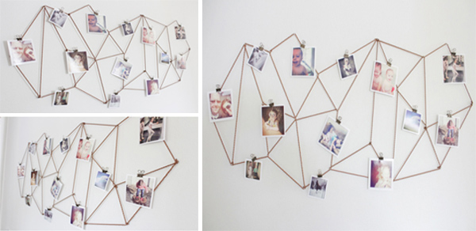
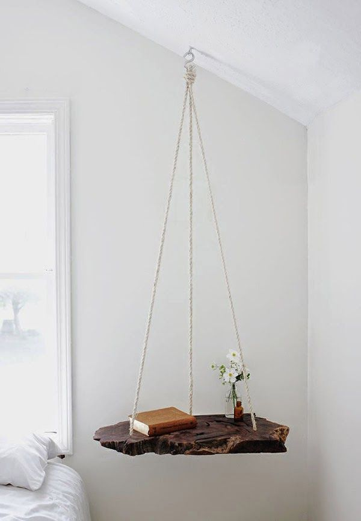

Sáng tạo không ngừng với những ý tưởng DIY
Mar 1, 2019

Bạn yêu thích các sản phẩm handmade, bạn là một tín đồ DIY hay bạn chỉ muốn tận dụng hoặc tái chế các vật dụng cũ, bài viết này sẽ cho bạn ...
DIY (do it yourself ) không quá khó hay đòi hỏi nhiều sự khéo léo, tỉ mỉ! Tạo ra các tác phẩm nghệ thuật tuyệt vời hoặc tái tạo vật dụng cũ thành một sản phẩm mới và hữu ích bắt đầu bằng nguồn cảm hứng và sự quyết tâm với một ý tưởng sáng tạo. Dưới đây là 15 ý tưởng thú vị mà bạn có thể quan tâm!
"Tròn mắt" với 21 cách tái chế chai nhựa cũ cực kỳ sáng tạo ..
June 2, 2019

"Tròn mắt" với 21 cách tái chế chai nhựa cũ cực kỳ sáng tạo. Cuộc sống ... ..
Hóa ra việc biến những đồ dùng cũ hoặc không dùng nữa thành một thứ gì đó hữu ích là một nghệ thuật. Điều đó có ... Chậu hoa DIY